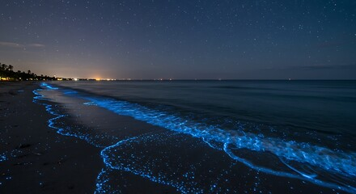
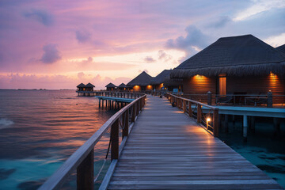
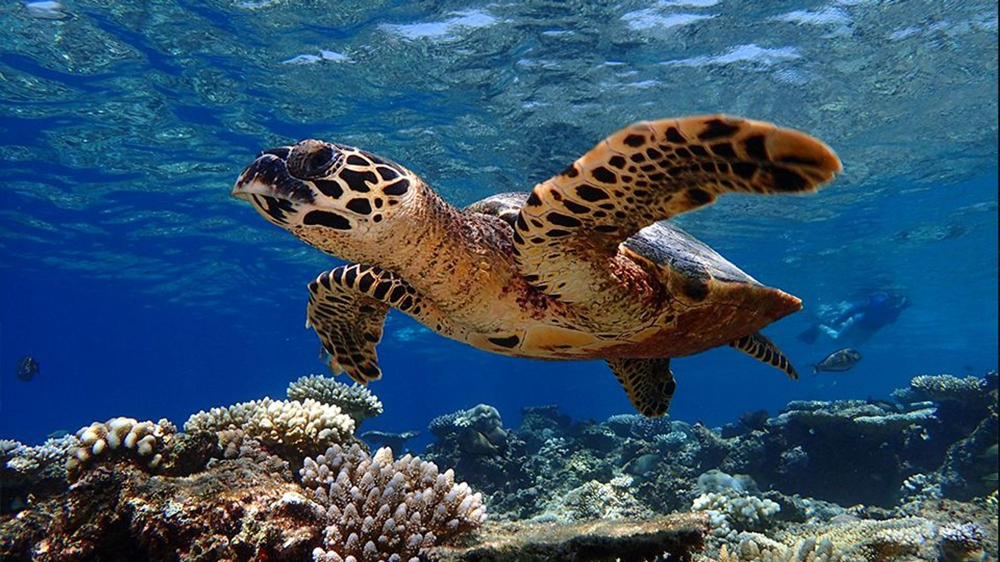
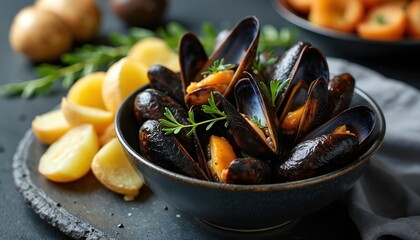

|  |
VAADHOO ISLANDThis beautiful show is best photographed at night when the bioluminescence of the waves creates a magical glow against the night sky. |
MALÉ ATOLLMalé Atoll effortlessly blends the vibrant energy of a multicultural city with the serene beauty of turquoise waters and sun-kissed beaches.Here, modernity meets nature, creating a paradise that delights the senses and soothes the soul. |
 |
|  |
MANTA POINTManta Point is one of the most famous diving destinations, where visitors can swim alongside graceful manta rays. The crystal-clear waters also reveal vibrant coral gardens teeming with colorful tropical fish, making every dive an unforgettable underwater adventure. |
FOODMaldivian cuisine is shaped by the ocean, with tuna as the staple ingredient in traditional dishes. Coconut, rice, and an array of exotic spices complement the flavors, creating meals that are both aromatic and bursting with tropical taste. |
 |